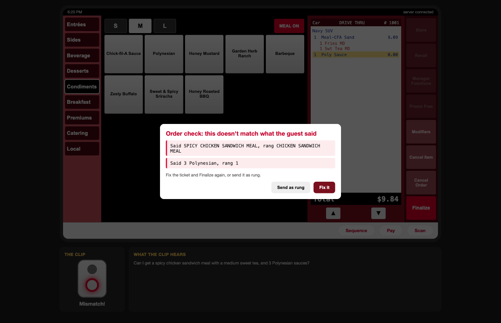
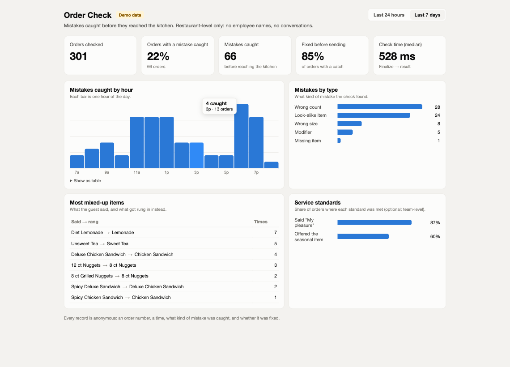

A second set of ears for the person taking your order. Order Check is an AI-powered microphone that listens while an employee takes an order, compares what the guest said with what was rung in, and flags the difference before the ticket reaches the kitchen.
When I worked at Chick-fil-A, most order mistakes weren't dramatic. They were near-misses: a fat-fingered tap on the button next to the right one, spicy instead of regular, an 8-count rung as a 12-count, one Polynesian sauce instead of three. Each one gets caught late, at the window or by an unhappy guest, and costs a remake, wasted food, and time in a line that's already long.
Nothing checks the gap between what a guest says and what gets entered. Chains have tested AI that replaces the person taking the order. I wanted the opposite: keep the person and the hospitality, and give them a backup that catches the small mistakes. AI that keeps jobs, not takes them. The AI never changes a ticket; it only points at the mismatch.
Listening starts when the employee enters the car (drive-thru) or the guest's name (counter), and stops at Finalize. The check has three answers, not two. A confident mismatch buzzes the AI mic. Couldn't confirm (unclear audio, or something on the ticket that simply wasn't heard) shows a quiet note with no buzz, because false alarms teach people to ignore the alert. Anything the guest didn't specify, like a size, is never counted as a mistake.
Everything the system knows about the restaurant (items, how people say them, look-alike groups, modifiers, meal rules) lives in one menu file, so another restaurant could adopt it by writing its own.


I built a test set of scripted orders, spoken by 16 synthetic voices, in two situations (face-to-face, and headset, where only the employee's read-back is heard) and at three noise levels. Every order is checked against its correct ticket and against tickets with planted mistakes of every kind.
| Clean audio, default model | Mistakes caught | False alarms |
|---|---|---|
| Orders I tuned the rules on | 96% | 3% |
| New orders it never saw | 81% | 35% |
The second row is the one that matters. On the orders I tuned against, the check looks nearly perfect. On a held-out set of new orders, it still catches most mistakes, but it raises false alarms on about a third of correct tickets. The rules are overfit: phrasings like "one large and one small lemonade" or "two shakes, one with no whipped cream" were never taught. I didn't patch those, because fixing them would make the held-out test meaningless.
That's the real takeaway: a rule-based reader can be patched phrase by phrase, but it won't generalize on its own. The data points to the next step.